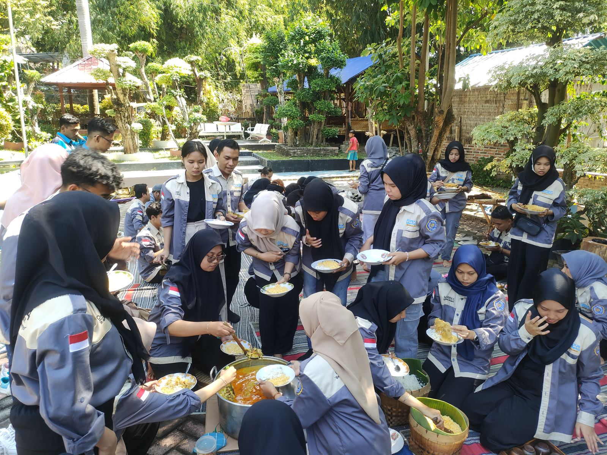
Unit Layanan & Program Unggulan Yayasan
Yayasan mengelola unit pendidikan terpadu dari tingkat Taman Kanak-Kanak hingga Sekolah Menengah Atas dengan standar mutu, nilai, dan tata kelola yang berkelanjutan.
Taman Kanak-Kanak (TK) Modern
Unit Pendidikan AktifFokus: Pembelajaran holistik berbasis karakter, kreativitas, literasi awal, dan lingkungan
Anak usia 4–6 tahun
- • Pendampingan Terstruktur
- • Kurikulum & Modul Khusus
- • Kolaborasi Mentor & Mitra
- • Akses Jejaring & Inkubasi
Program Mentoring Talenta
Program PembinaanFokus: Pendampingan intensif bagi anak dan remaja berprestasi akademik maupun non-akademik
Pemenang lomba & talenta potensial
- • Pendampingan Terstruktur
- • Kurikulum & Modul Khusus
- • Kolaborasi Mentor & Mitra
- • Akses Jejaring & Inkubasi
Program Kewirausahaan Muda
Program PengembanganFokus: Pengembangan jiwa wirausaha, kepemimpinan, dan problem solving berbasis sosial
Remaja & pemuda
- • Pendampingan Terstruktur
- • Kurikulum & Modul Khusus
- • Kolaborasi Mentor & Mitra
- • Akses Jejaring & Inkubasi
Program Inkubasi Prestasi & Inovasi
Program StrategisFokus: Inkubasi lanjutan bagi peserta berprestasi untuk dikembangkan ke level regional dan nasional
Juara lomba & inovator muda
- • Pendampingan Terstruktur
- • Kurikulum & Modul Khusus
- • Kolaborasi Mentor & Mitra
- • Akses Jejaring & Inkubasi
Program Inti Yayasan
Program yayasan dikembangkan secara tematik dan terintegrasi untuk menjawab tantangan pendidikan, lingkungan, energi, dan sosial masyarakat secara berkelanjutan.
Energi
Memastikan akses energi ramah lingkungan, efisien, dan terjangkau melalui inovasi energi terbarukan berbasis komunitas.
Lingkungan
Terlibat aktif dalam penanganan perubahan iklim untuk menjaga kelestarian lingkungan hidup dan keberlanjutan bumi.
Pendidikan
Berpartisipasi dalam pengembangan pendidikan yang merata, berkualitas, dan berorientasi pada pemecahan masalah nyata.
Sosial
Pemberdayaan sosial untuk mewujudkan kemandirian dan kesejahteraan masyarakat secara inklusif.
Kesetaraan
Memperhatikan isu kesetaraan gender serta pemberdayaan kelompok masyarakat marginal dan difabel.
Fasilitas Pendukung Pembelajaran
Dirancang khusus untuk menciptakan lingkungan belajar yang aman, menyenangkan, dan merangsang kreativitas anak.
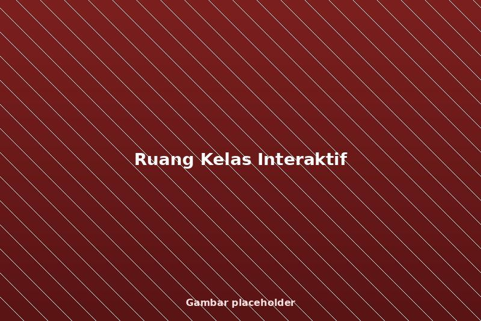
Ruang Kelas Interaktif
Kelas tematik, visual cerah, dan ramah anak.
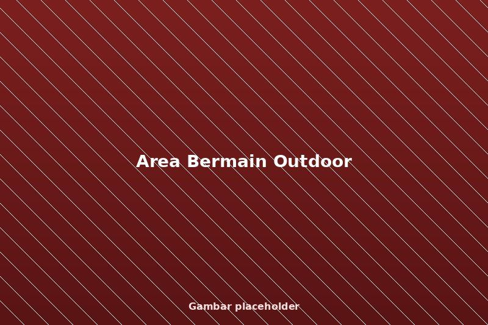
Area Bermain Outdoor
Playground aman untuk motorik dan kerja sama.
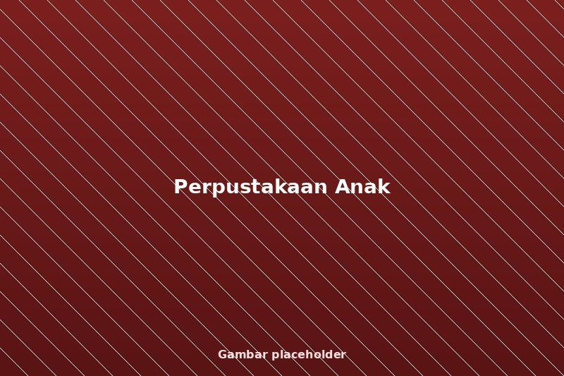
Perpustakaan Anak
Buku cerita edukatif dan pojok baca nyaman.
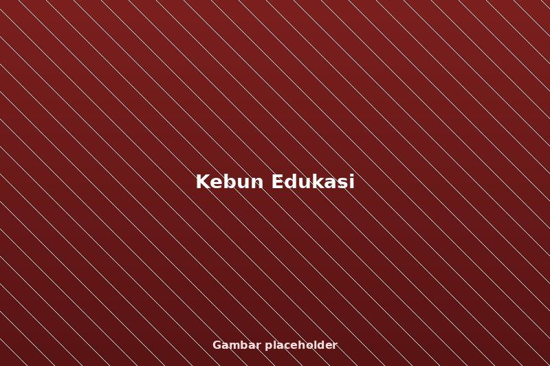
Kebun Edukasi
Belajar alam melalui menanam & merawat.
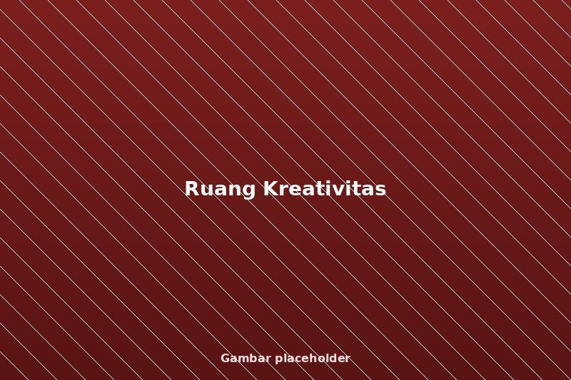
Ruang Kreativitas
Seni, musik, dan aktivitas eksploratif.
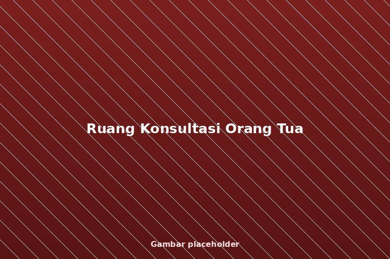
Ruang Konsultasi Orang Tua
Diskusi perkembangan anak bersama mentor.
Suasana & Aktivitas Anak
Cuplikan aktivitas nyata yang mencerminkan suasana belajar yang aktif, ceria, dan penuh perhatian.
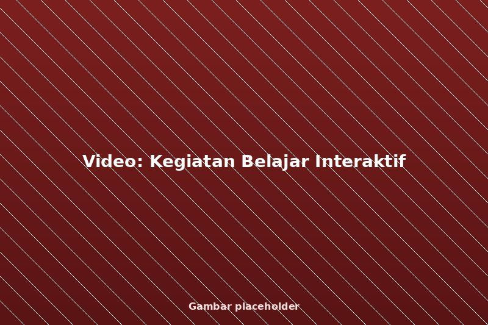
Kegiatan Belajar Interaktif
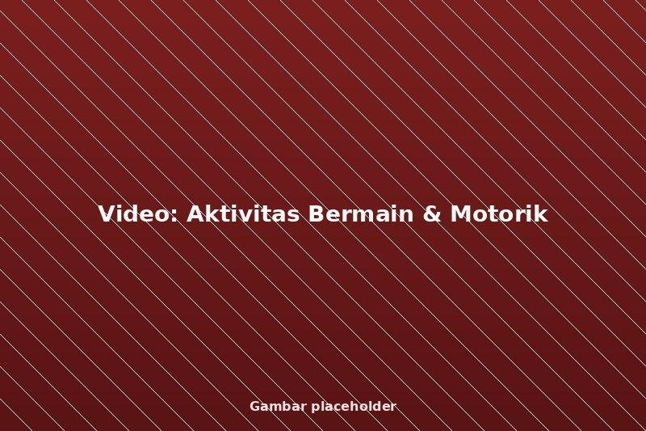
Aktivitas Bermain & Motorik
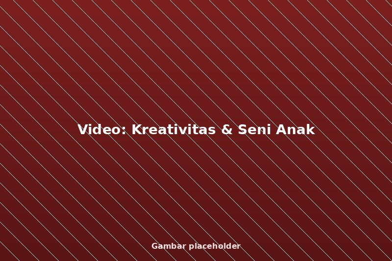
Kreativitas & Seni Anak
Program Unggulan Berbasis Karya & Inovasi
Yayasan mengembangkan program pembelajaran berbasis proyek nyata untuk membentuk peserta didik yang kreatif, solutif, dan adaptif terhadap tantangan masa depan. Setiap program dirancang agar anak tidak hanya memahami teori, tetapi mampu mencipta, bereksperimen, dan menghasilkan karya yang berdampak.
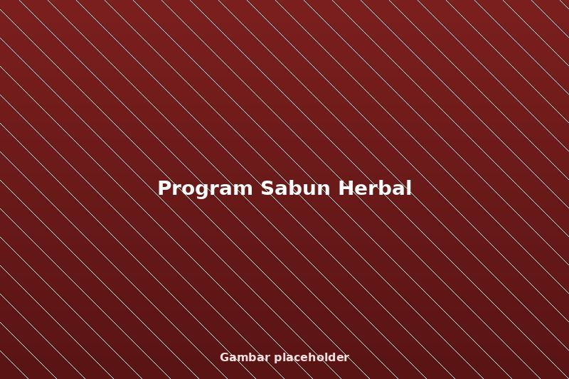
Program Sabun Arang Bambu
Program ini dirancang untuk memperkenalkan peserta didik pada pemanfaatan sumber daya alam secara bijak melalui pembuatan sabun herbal berbahan tumbuhan lokal. Anak belajar bahwa sains, kesehatan, dan lingkungan dapat diolah menjadi produk yang bernilai guna dan bernilai ekonomi.
- • Pengenalan sifat tanaman dan bahan alami
- • Proses pembuatan sabun secara aman dan higienis
- • Pengujian kualitas dan kemasan produk
- • Edukasi kewirausahaan dan pemasaran sederhana
Nilai Unggul: Sains terapan • Lingkungan • Kewirausahaan dini
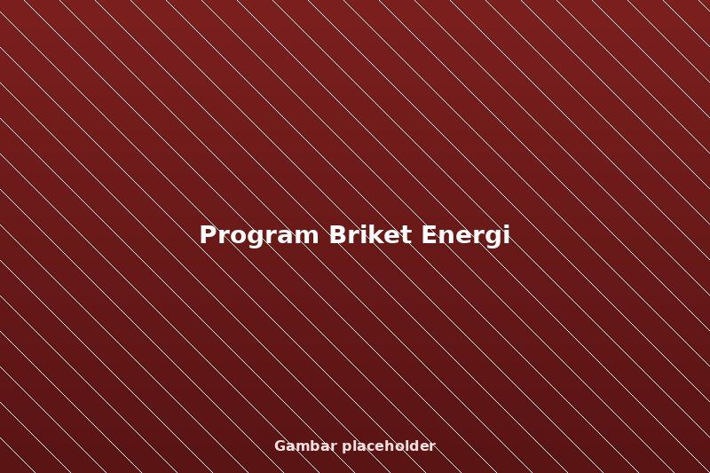
Program Energi Terbarukan & Briket Ramah Lingkungan
Melalui program ini, peserta didik diajak memahami tantangan energi dan lingkungan melalui praktik langsung mengolah limbah organik menjadi briket sebagai sumber energi alternatif. Anak dilatih berpikir kritis terhadap permasalahan global dan mencari solusi berbasis lingkungan sekitar.
- • Pemahaman konsep energi dan limbah
- • Proses pembuatan briket dari bahan organik
- • Uji efisiensi dan daya bakar
- • Diskusi dampak lingkungan dan keberlanjutan
Nilai Unggul: Green education • Problem solving • Kesadaran global
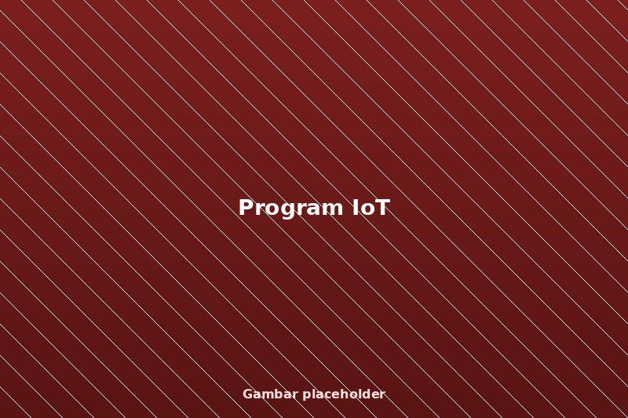
Program Teknologi & Internet of Things (IoT)
Program IoT memperkenalkan peserta didik pada dunia teknologi dan pemrograman melalui proyek nyata yang relevan dengan kehidupan sehari-hari. Anak tidak hanya menjadi pengguna teknologi, tetapi dibimbing untuk memahami cara kerja dan menciptakannya.
- • Logika dasar pemrograman dan sensor
- • Perakitan alat IoT sederhana
- • Automasi dan pengolahan data
- • Presentasi dan demonstrasi proyek
Nilai Unggul: Teknologi masa depan • Computational thinking
Profil Lulusan yang Diharapkan
Profil lulusan berikut mencerminkan nilai dan arah pembinaan yang dikembangkan yayasan melalui lembaga pendidikan yang dikelola. Melalui pembelajaran holistik dan lingkungan yang mendukung, peserta didik SDN Balas Klumprik tumbuh menjadi pribadi yang utuh, mandiri, dan berintegritas.
Pembelajar Tangguh
Peserta didik memiliki rasa ingin tahu tinggi, mampu berpikir kritis, bekerja sama, dan bertanggung jawab dalam proses belajar. Mereka siap menjadi pembelajar sepanjang hayat.
Pemikir Kritis
Peserta didik dibimbing untuk memiliki kejujuran, integritas, serta kemampuan membedakan yang benar dan salah berdasarkan nilai moral dan kebangsaan.
Agen Perubahan
Dengan sikap saling menghormati dan empati, peserta didik tumbuh menjadi individu yang peduli, beretika, dan mampu memberi dampak positif di lingkungannya.
Komunikator Percaya Diri
Peserta didik mampu menyampaikan gagasan secara santun, mendengarkan pendapat orang lain, dan berkomunikasi efektif dalam berbagai situasi.
Pemimpin Berkarakter
Peserta didik dilatih untuk mengambil inisiatif, bertanggung jawab, dan memimpin dengan keteladanan serta semangat gotong royong.
Pribadi Berakhlak Mulia
Peserta didik berkembang menjadi pribadi yang disiplin, tangguh, dan berakhlak mulia, siap menghadapi tantangan masa depan dengan sikap positif.